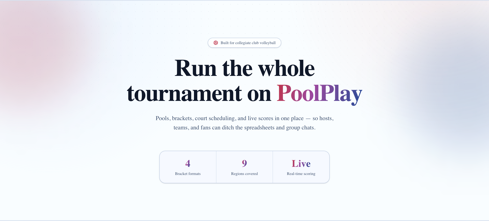

PoolPlay
Tournament platform for collegiate club volleyball. Inspired from my own experience as club president scheduling and managing tournaments across spreadsheets, social media platforms, and payment platforms. PoolPlay handles registration, pool draws, brackets, court scheduling, and live scoring in one consolidated platform.
Repo ↗